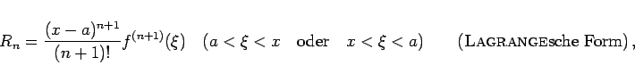
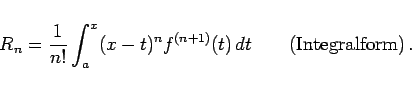
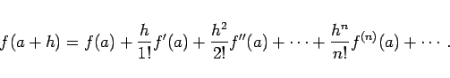
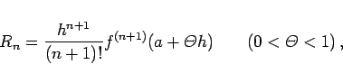
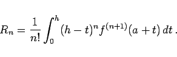

Inhalt Index DeskTop Bronstein

 Unendliche Reihen Funktionenreihen Potenzreihen Entwicklung in Taylor-Reihen, MacLaurinsche Reihe
Unendliche Reihen Funktionenreihen Potenzreihen Entwicklung in Taylor-Reihen, MacLaurinsche Reihe


Stetige Funktionen  , die für x = a alle Ableitungen besitzen, können oftmals mit Hilfe der TAYLORschen Formel als Summe einer Potenzreihe dargestellt werden.
, die für x = a alle Ableitungen besitzen, können oftmals mit Hilfe der TAYLORschen Formel als Summe einer Potenzreihe dargestellt werden.
Diese Reihenentwicklung ist für die x-Werte richtig, für die das Restglied Rn = f(x) - Sn beim Übergang  gegen Null strebt. Dabei ist zu beachten, daß der Begriff Restglied nur dann mit dem in diesem Buch eingeführten Begriff gleichen Namens identisch ist, wenn die Formel (7.88a) richtig ist.
gegen Null strebt. Dabei ist zu beachten, daß der Begriff Restglied nur dann mit dem in diesem Buch eingeführten Begriff gleichen Namens identisch ist, wenn die Formel (7.88a) richtig ist.
Für das Restglied gibt es die folgenden Darstellungen:
|  | (7.88b) |
|  | (7.88c) |
|  | (7.89a) |
Die Ausdrücke für das Restglied sind:
|  | (7.89b) |
|  | (7.89c) |